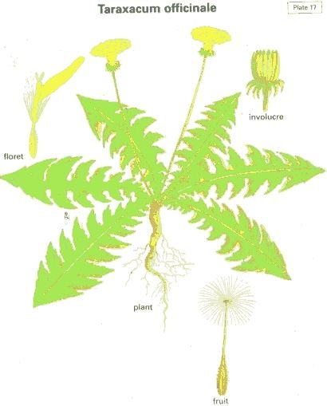

|
ECONOMICALLY
IMPORTANT PLANTS OF INDIA |
| Under-utilized Food and Fodder species and their wild relatives | Contributed by Ms.M.L Annapurna And Dr. Dhanapal, UAS, Bangalore |
Taraxacum officinale Weber
Taxonomic Details

----- Correct Name
----- Classification
----- Synonyms
----- Common Names
Other Biological Details
----- Habit and Habitat
----- Diagnostic Features
----- Reproductive Biology
---------- Breeding System
---------- Phenology
---------- Pollinators
---------- Seed Biology
----------Seed Germination
------ Cultivation
----- Major Pests and Diseases
Economic Potential and Uses
----- Parts Used
----- Uses
----- Harvesting Practices
----- Produce and Products
----- Chemistry
----- Processing Techniques
----- Other uses
----- Economic Potential to the
Country
----- Export Potential
Miscellaneous Information
Literature
DIAGNOSTIC FEATURES
Herbs, perennial with rhizomatous rootstock; scapes 5-25 cm or more high,
glabrous or sparsely hairy or woolly, fleshy, ribbed. Leaves radical, oblanceolate
or oblanceolate-oblong, rarely linear, entire or toothed, pinnatifid or runcinate-pinnatifid,
variously lobed, 4-20 x 1-4 cm, glabrous or pubescent; lobes acute, more or
less denticulate. Heads 1.5-2 x 0.8-1.5 cm or more. Outer involucral bracts
ovate or ovate-lanceolate, 2.7 x 2-2.5 mm, herbaceous, glabrous or sparsely
hairy; inner lanceolate or oblong-lanceolate, 10-18 x 2-3 mm or more. Ligules
yellow. Achenes yellowish, oblong or oblong-lanceolate, 9-12 mm or more long,
yellowish, usually angled or dorsally compressed, abruptly narrowed into a very
slender, long beak. Pappus pale whitish, 6-8 mm long, unequal, simple, slender.
REPRODUCTIVE BIOLOGY
Breeding System
:
It propagates through seeds. The plant is self-fertile
Phenology :
It is in flower from April to May, and the seeds
ripen from May to June. April.-Sept.
Pollinators:
The scented flowers are hermaphrodite
(have both male and female organs) and are pollinated by Insects and Apomictic
(reproduce by seeds formed without sexual fusion). .
It is noted for attracting wildlife.
Seed Biology :
Seed Germination:
A
very easily grown plant, it succeeds in most soils, though it prefers a well-drained
humus-rich neutral to alkaline soil in full sun or light shade.
Seed - sow spring in a cold frame and either surface-sow or only just cover the seed. Make sure the compost does not dry out. Germination should take place within 2 weeks, though 2 weeks cold stratification may improve germination. Prick out the seedlings into individual pots when they are large enough to handle, choosing relatively deep pots to accommodate the tap root. Plant them out in early summer.
Division in early spring as the plant comes into growth.
SOIL AND CLIMATE: The plant prefers light (sandy), medium (loamy) and heavy (clay) soils and requires well-drained soil. The plant prefers acid, neutral and basic (alkaline) soils and can grow in very alkaline soil. It can grow in semi-shade (light woodland) or no shade. It requires moist soil. The plant can tolerate maritime exposure.
A very hardy plant, tolerating temperatures down to at least -29°c.
The dandelion is a common weed of lawns and grassy places. Though it has a bitter flavour, the plant is often cultivated as a salad crop and as a medicinal plant, especially in parts of Europe. There are some named varieties with larger, more tender and less bitter leaves. Dandelions can provide edible leaves all year round, especially if they are given a small amount of protection in the winter.
A valuable bee plant and an important food plant for the caterpillars of many butterfly and moth species, it grows well in a spring meadow.
A deep rooting plant, it has roots up to 1 meter long and brings up nutrients from lower levels of the soil. An excellent plant to grow in lawns, if the lawn is cut no more than fortnightly then the dandelions will provide a good quantity of edible leaves. Grows well with alfalfa. Another report says that it inhibits the growth of nearby plants. This is probably a reference to the fact that the plant gives off ethylene gas, this gas is a hormone that promotes the premature ripening of fruits and also induces the premature fruiting of plants, thereby stunting their growth.
T. officinale is not a valid name for this species,
but no valid name has as yet been ascribed to it. This is actually an aggregate
species of many hundreds of slightly differing species. Most seed production
is apomictic which means that plants produce seed non-sexually and all seedlings
are clones of the parent, thus small differences are maintained.
Cultivars
'Vert de Montmagny' 'Vert de Montmagny Amélioré'
This form has large long dark green leaves, well lobed and denticulated.
They may be blanched or not. Vigorous and productive plants, they are best
sown in early spring or autumn.
'Broad Leaved' 'Thick leaved', 'Cabbage Leaved'
The plant has large broad dark green leaves, more deeply lobed along the axis
of the leaf than the wild form. The leaves are thick and tender. Plants
are semi-erect in habit, and the leaves are easily blanched. In rich soils they
can be 60cm wide. Plants do not go to seed as quickly as French types.
'Amélioré à Coeur Plein'
A very distinct cultivar, surpassing the wild plant not so much in size as in
the very great number of leaves, which form a regular tuft of clump, instead
of a plain rosette. It yields a very abundant crop without taking up much
ground, and blanches very easily, and indeed, almost naturally.
MAJOR PESTS & DISEASES
Pests:
Diseases:
Parts used:
Flowers;
Leaves; Root;
Uses
Coffee; Flowers; Leaves;
Root; Tea.
Harvesting
Practices
Produce and Products
Medicinal Uses: Aperient; Cholagogue; Depurative; Diuretic; Hepatic; Laxative; Stomachic; Tonic; Warts. The dandelion is a commonly used herbal remedy. It is especially effective and valuable as a diuretic because it contains high levels of potassium salts and therefore can replace the potassium that is lost from the body when diuretics are used.
All parts of the plant, but especially the root, are slightly aperient, cholagogue, depurative, strongly diuretic, hepatic, laxative, stomachic and tonic. The root is also experimentally cholagogue, hypoglycaemic and a weak antibiotic against yeast infections. The dried root has a weaker action. The roots can be used fresh or dried and should be harvested in the autumn when 2 years old. The leaves are harvested in the spring when the plant is in flower and can be dried for later use. A tea can be made from the leaves or, more commonly, from the roots.
The plant is used internally in the treatment of gall bladder and urinary disorders, gallstones, jaundice, cirrhosis, dyspepsia with constipation, oedema associated with high blood pressure and heart weakness, chronic joint and skin complaints, gout, eczema and acne.
The plant has an antibacterial action, inhibiting the growth of Staphylococcus aureus, Pneumococci, Meningococci, Bacillus dysenteriae, B. typhi, C. diphtheriae, Proteus etc.
The latex contained in the plant sap can be used to remove corns, warts and verrucae. The latex has a specific action on inflammations of the gall bladder and is also believed to remove stones in the liver. A tea made from the leaves is laxative.
All parts of the plant, but especially the root, are slightly aperient, cholagogue, depurative, strongly diuretic, hepatic, laxative, stomachic and tonic. The root is also experimentally cholagogue, hypoglycaemic and a weak antibiotic against yeast infections. The dried root has a weaker action. The roots can be used fresh or dried and should be harvested in the autumn when 2 years old. The leaves are harvested in the spring when the plant is in flower and can be dried for later use. A tea can be made from the leaves or, more commonly, from the roots.
As a ornamental flowering herb
Kirtikar and Basu's illustrated Indian Medicainal Plants 6 K. S. Mhaskar, E. Blatter, J. F. Caius,2000,Library of JNCASR,Bangalore.